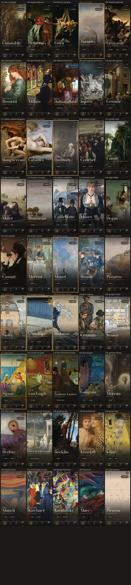
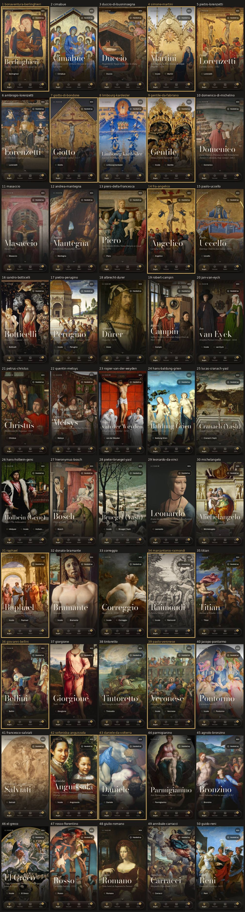
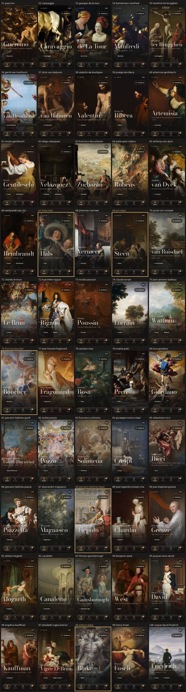
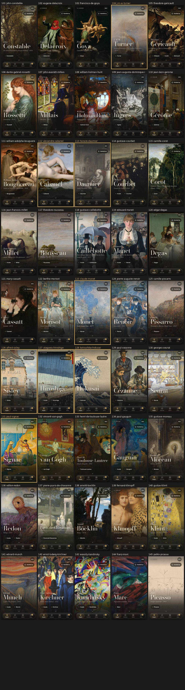
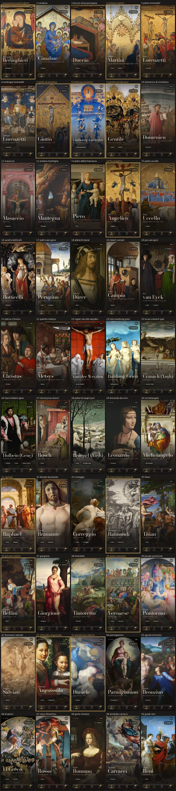
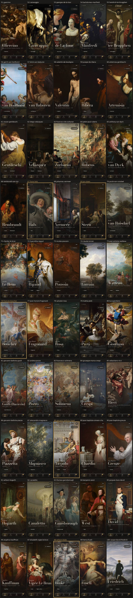
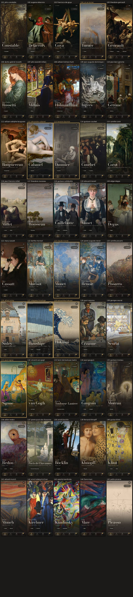

Ana ekran denetimi
145 yürüyüş eserinin ana ekrandaki açılış karesi. Pirinç çerçeveli ve adı pirinç renkli olanlar bu denetimde düzeltildi (25 eser). Resme dokunup büyütebilirsin.
390×844 · 375×667 · 430×932 · Düzeltilenler
390×844 (iPhone 13)

375×667 (küçük ekran)



430×932 (büyük ekran)



Düzeltilenler
- Bonaventura Berlinghieri: kenar kırpıldı
- Simone Martini: kenar kırpıldı, odak taşındı
- Giotto di Bondone: kenar kırpıldı
- Limbourg kardeşler: kenar kırpıldı
- Gentile da Fabriano: kenar kırpıldı
- Fra Angelico: kenar kırpıldı
- Raphael: odak taşındı, biraz yakınlaşıldı
- Marcantonio Raimondi: kenar kırpıldı
- Giovanni Bellini: odak taşındı, biraz yakınlaşıldı
- Paolo Veronese: odak taşındı, biraz yakınlaşıldı
- Sofonisba Anguissola: odak taşındı
- Daniele da Volterra: odak taşındı
- Frans Hals: kenar kırpıldı
- Jan Steen: kenar kırpıldı
- François Boucher: odak taşındı, biraz yakınlaşıldı
- Giovanni Battista Tiepolo: odak taşındı, biraz yakınlaşıldı
- William Blake: kenar kırpıldı
- J. M. W. Turner: odak taşındı
- Alexandre Cabanel: odak taşındı, biraz yakınlaşıldı
- Honoré Daumier: kenar kırpıldı, odak taşındı
- Claude Monet: odak taşındı, biraz yakınlaşıldı
- Alfred Sisley: odak taşındı, biraz yakınlaşıldı
- Utagawa Hiroshige: kenar kırpıldı
- Katsushika Hokusai: kenar kırpıldı
- Paul Signac: kenar kırpıldı
Düzeltmeler data/yuruyus_odak.json dosyasında. Senin elle ortaladıkların (data/gorsel_odak_elle.json ve cihazdakiler) önceliklidir; onlara dokunulmadı.